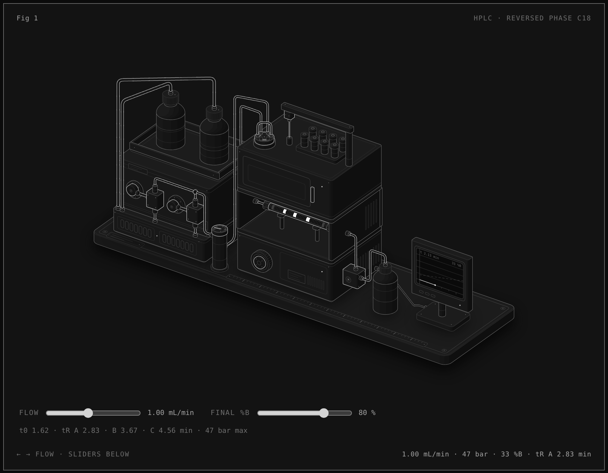
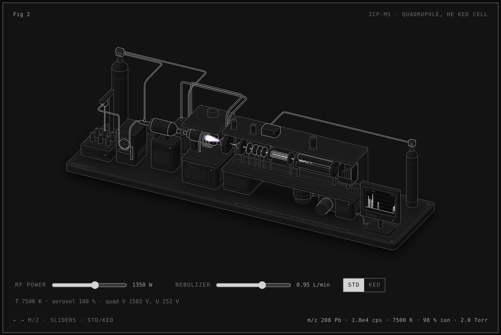
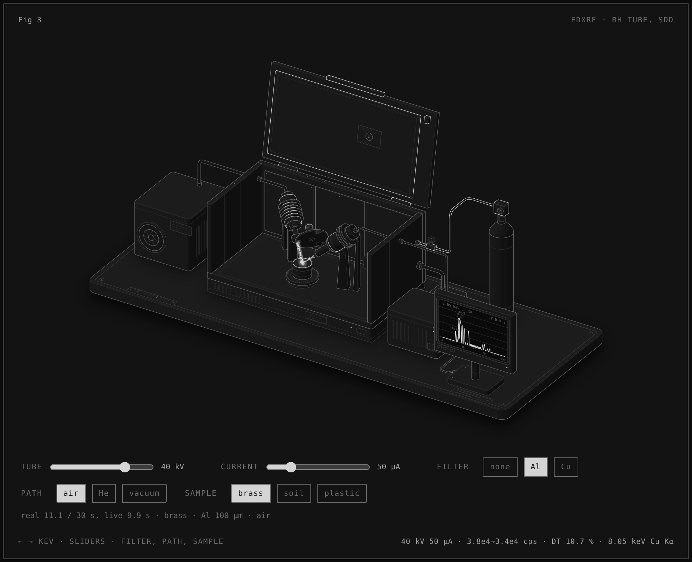
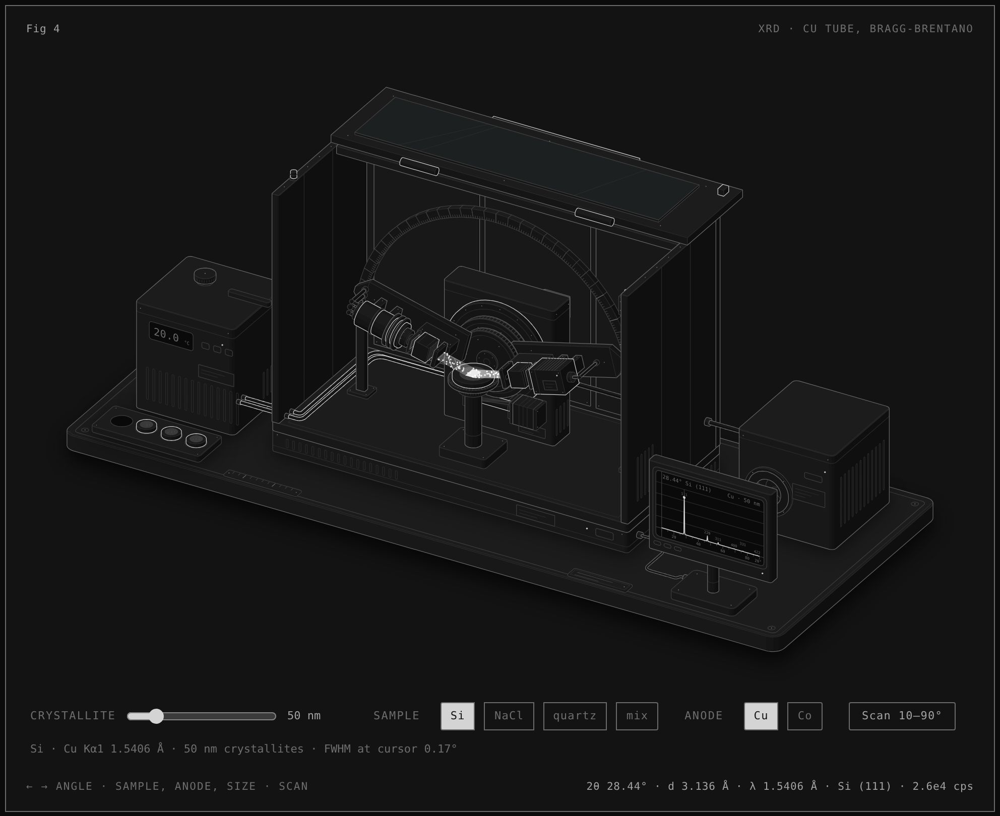
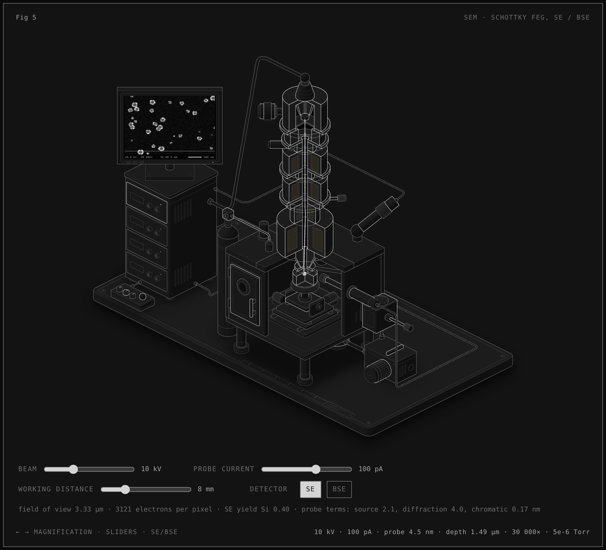

Isometric instruments

Fig 1 · HPLCreversed phase C18, pump to detector

Fig 2 · ICP-MSplasma torch, quadrupole, He KED cell

Fig 3 · XRFEDXRF, Rh tube, SDD detector

Fig 4 · XRDBragg-Brentano, Cu tube, theta-theta goniometer

Fig 5 · SEMSchottky FEG column, SE / BSE detectors